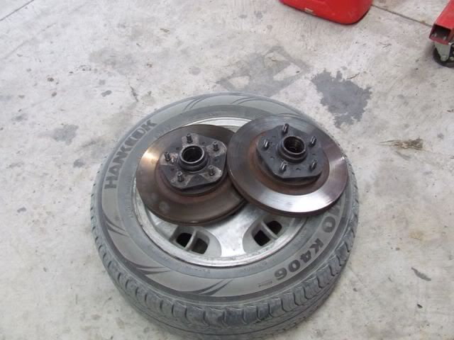

-
So you want to fit 4 pots & Decent rotors on your 84 -86 Turbo or any YEAR Non Turbo and you can't find 88 Turbo Hubs ?
You will Need the following before you begin
Tools
1) A decent Place to work
2) Jack stands & typical hand tools for working on cars
3) Brake line clamps & Drip tray
4) Something to chock the wheels
Parts
A) Z32 4 pot calipers
B) Brake rotors to suit your z32 calipers ( there are 26mm and 30mm versions so make sure get the correct ones )
C) Longer wheel studs x10
D) Front wheel Bearing kit ( optional but you should probably do it while its apart )
E) PDM conversion Brake lines > http://www.pdm-racing.com/products/brakeslines.html
F) New Bolts for the brake calipers - m12x1.26 60mm length - use with existing spring washers.
G) Machined Spacer for Brake Caliper - 30mm OD 12mm ID 10mm tall
H) Fine washers to match the Machined Spacer
Services
you will need some time with a reasonable good fitter / turner / somebody who can operate a lathe reasonably well
Note !!!!
If you wish to keep your stock wheels with the 4 pot brakes this is possible however you will need a full set of 20mm Hubcentric adapters for the front and rear
Step 1
Jack up the car and put chassis stands at the front on a flat and level surface and remove the wheels, now is a great chance to throw a drip tray under the brake caliper and fit the brake line clamps so you don't get brake fluid everywhere.
Step 2
Loosen the bolt that holds the brake line onto the caliper , DO this while the brake caliper is still bolted down or its a PITA
after you have removed the brake line you can go ahead and unbolt the brake caliper.
Step 3
Remove the front hubs as per the NISSAN FSM, remove your wheel bearings as per the NISSAN FSM & clean all the grease out of the hubs so you don't piss off the person who is going to machine them
-- By now you should have a stack of shit looking like this

Step 4
Remove the old brake rotors from the hubs but don't throw away the rotors as you will need one later
--By Now you should have 2 fully stripped hubs to send into the engineer to be machined.
Supply your friendly engineer with the following
1x Z32 Brake rotor ( Sample for measuring from )
2x Z31 pentagon or square front hubs
1x original Nissan wheel ( Sample for measuring from )
Step 5
Have the OD of the hub turned down to the measurement shown
Once the Rotor slips onto the hub nicely it is time to machine a sleeve to be pressed onto the spigot so that the brake rotor is not going to slop around IE it needs to be Centric to the HUB
Tell the engineer to machine down the hub, so that he can then turn up a sleeve that locates the brake rotor and the wheel snug. The sleeve i had made is high tensile alloy to a 4 thou interference shrink fit.
it should look like this

NOTE
It is very Important to provide the wheel and brake rotor as a sample so that the engineer can make a sleeve to accurately locate the wheel and rotor. If you engineer can't figure this out GO SOMEWHERE ELSE85 Turbo Slick Top
__________________________________________________ _____ -
Here is a comparison of the Hub Before & After
Step 6
Put two hubs side by side on a flat level surface, Refit a Z31 rotor to the first hub then fit a Z32 rotor to the second hub
Take measurements to the center-line of the rotor from both the Z31 & Z32, this is so you can make a spacer for the 4 pot caliper as it needs to be pushed out further. Subtract the diffidence and use this value ( i got approx 10mm ) and go make a spacer. You will also need thin washers in addition to your spacer so you can get this perfectly centered up.
I have used an oversize nut ( FOR MOCK UP PURPOSES ONLY ) as a spacer, this is to allow trial fitment so that a spacer can be machined from round stock, to the correct dimensions. As Stated before use thin washers to "fine tune" until you have the caliper centered over the rotors
You will need to re check your spacers after the hubs have had their wheel bearings fitted, because if you do a "Dry run" to take your measurements they may change when the hub is packed with grease & torqued down onto the spindle
Note
When comparing the heights of the rotors , you can see why the 4 pot caliper needs to be spaced out.
I am using 30mm thick rotors, this will look different if you use the 26mm thick rotors.
Step 7
Take your caliper and fit it to the Strut with your spacers ( reuse the bolts from your original Z31 brake calipers ) Bust out your Calipers and use the height measure thingy so you can decide how much longer the bolts need to be.
now go out and buy the highest grade shanked Bolts you can find that are approx 6-8 mm longer.
USE YOUR OWN MEASUREMENT HERE as my spacer isn't thick enough.
Step 8
If you decided to put in new wheel bearings Refer to your FSM and do this now
if not carry on and put shit together ( my photo's show it a bit out of order but you get the idea )

My Pictures show a 20mm spacer and fitment of a factory 85 Turbo wheel, clearance
Step 9
Get your PDM conversion brake lines and fit these as you would any other brake line, follow your FSM procedure and you should be fine.
It is also a great Idea to get your brake calipers rebuilt and use BRAND new Rotors and Pads.
Don't forget to check out my How To for 88T rear brakes on 85T rear control arms
you can see that here viewtopic.php?f=24&t=29872&p=340142#p34014285 Turbo Slick Top
__________________________________________________ _____ -
James,
Very nice write up. Good thing 88T hubs are hard to come in New Zealand :lol:…and how much HP do you have at 0 boost -
It should do the trick nicely, the machine work in most cases should be a lot less than the cost of a 88 turbo hubsRuss84na wrote: James,
Very nice write up. Good thing 88T hubs are hard to come by in New Zealand :lol:85 Turbo Slick Top
__________________________________________________ _____ -
Nice write up this looks like this might be the better option for how I am currently doing my build1984 300ZX - 1988 VG30T Engine, Trans, Diff, ECU
1987 300ZX TURBO - ( Parts Car ), 1988 300ZX TURBO - ( Parts Car )
1972 240Z -- Full restore - L28ET L6 Engine from 280zx, T-5 transmission, Rear diff from the 87
1998 Mazda B-2500, And a lot of bikes -
You can also take the 4-pot calipers apart and knock out the bubble flare so you can use Z31 style front brake lines for people who don't want to spend extra money on conversion lines. Might as well rebuild the calipers when you have them apart and can get a rebuild kit from Z1Motorsports.com for less than $20.
1986 300ZX Turbo…sold
1990 Skyline GT-R…new money pit
2014 Juke Nismo RS 6-speed…daily -
Re: How to Fit Z32 4 Pot Brakes to your 84-86 Turbo or any N
so z32 has a 68mm hub instead of the z31 66.1? you machined that 66.1mm surface to slip a sleeve over it to make it 68 without using a shim? -
Re: How to Fit Z32 4 Pot Brakes to your 84-86 Turbo or any N
No That's not correctSharpen047 wrote: so z32 has a 68mm hub instead of the z31 66.1? you machined that 66.1mm surface to slip a sleeve over it to make it 68 without using a shim?
where the brake rotors locates is 68mm, otherwise the brake rotor would not be centric and would wobble around
Where the wheel locates is still 66.1, this is why in my guide it recommends providing a brake rotor and wheel along with your hubs to your machinist so that no stuff ups happen.85 Turbo Slick Top
__________________________________________________ _____

Copyright © 2006–. All rights reserved. Privacy Policy